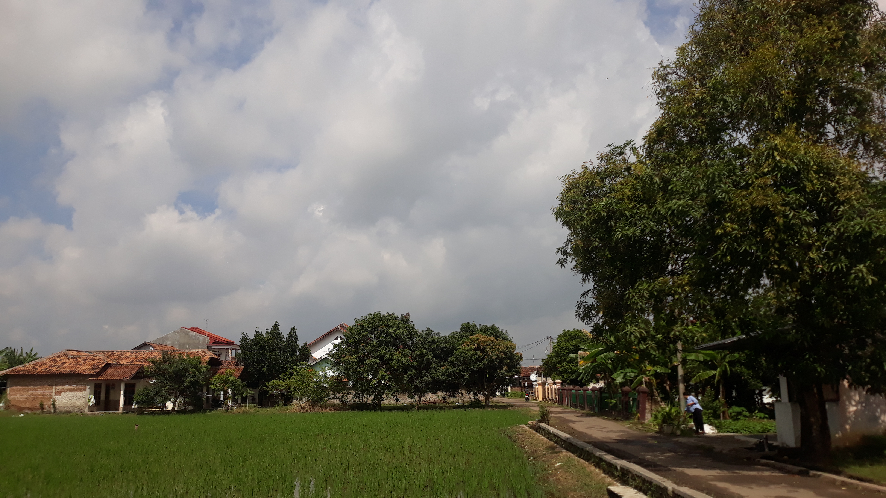

Lingkungan Kp Pangggang
Sejarah Singkat Kampung Panggang :
Kampung Panggang terletak di Kelurahan Panancangan, Kecamatan Cipocok Jaya, Kota Serang, Banten. Nama "Panggang" dipercaya berasal dari tradisi lokal yang dulu sering dilakukan oleh penduduk, yaitu memasak atau memanggang hasil tangkapan, seperti ikan atau hasil ternak. Tradisi ini menjadi ciri khas budaya masyarakat yang terus berkembang hingga kini.
Pada masa lampau, Kampung Panggang merupakan kawasan yang strategis karena letaknya yang dekat dengan pusat pemerintahan Kesultanan Banten. Wilayah ini menjadi tempat bermukim masyarakat yang sebagian besar berprofesi sebagai petani, nelayan, dan pedagang. Interaksi antarpenduduk dengan Kesultanan Banten turut memperkaya budaya lokal, termasuk tradisi keagamaan dan adat istiadat.
Seiring waktu, Kampung Panggang berkembang menjadi wilayah yang lebih modern, namun tetap mempertahankan nilai-nilai tradisional. Penduduknya yang ramah dan beragam terus menjaga harmoni sosial, menjadikan Kampung Panggang sebagai salah satu komunitas yang aktif dalam kegiatan keagamaan, sosial, dan budaya di Kecamatan Cipocok Jaya.
Saat ini, Kampung Panggang merupakan salah satu bagian penting dari Panancangan yang menjadi simbol kekayaan budaya dan sejarah lokal di Kota Serang, Banten.